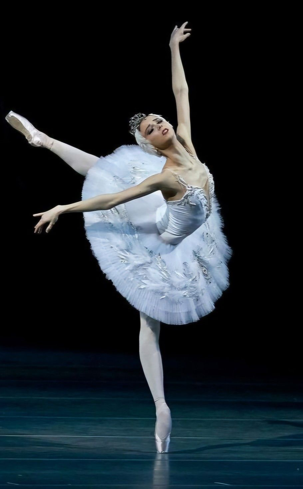
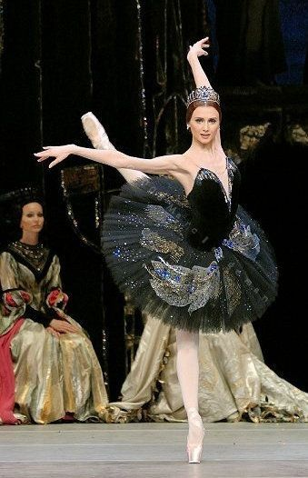
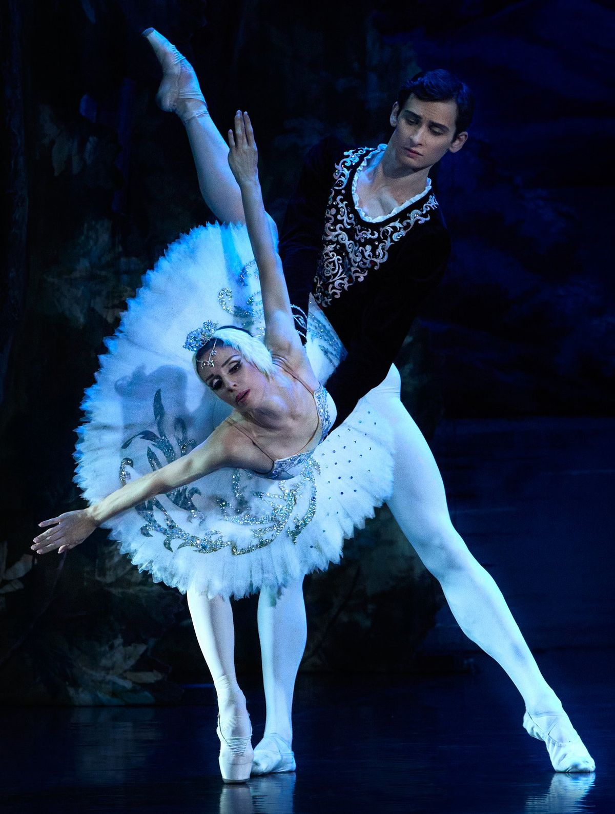
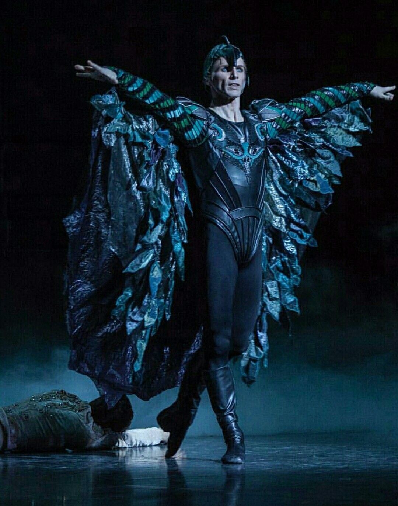

Lago dos Cisnes
Sinopse
A história gira em torno de Odette, uma jovem princesa que foi amaldiçoada pelo feiticeiro Rothbart. sendo transformada em cisne durante o dia e recuperando sua forma humana apenas à noite, às margens de um lago encantado. O feitiço só pode ser quebrado por uma promessa de amor verdadeiro.
Durante uma caçada, o Príncipe Siegfried encontra Odette no lago e se apaixona por ela, jurando amor eterno. No entanto, durante um baile no palácio, Rothbart engana o príncipe apresentando Odile, o Cisne Negro, que se parece com Odette. Confundido, Siegfried declara seu amor à mulher errada, selando o destino trágico da história.
O final varia conforme a montagem, podendo ser romântico ou trágico, mas sempre carregado de emoção.
Origem da obra, estilos e características
O Lago dos Cisnes é um dos balés mais famosos e importantes do repertório clássico mundial.
A obra estreou em 1877, no Teatro Bolshoi, em Moscou.
Coreógrafo: A coreografia original é atribuída a Julius Reisinger, mas a versão consagrada até hoje foi desenvolvida posteriormente por Marius Petipa e Lev Ivanov.
Compositor: Piotr Ilitch Tchaikovsky
Estilo: Balé clássico romântico.
O Lago dos Cisnes é um marco do balé clássico por unir música sinfônica, técnica rigorosa e narrativa dramática.
- A obra explora a dualidade entre o bem e o mal, representada pelo Cisne Branco e o Cisne Negro.
- O corpo de baile feminino tem papel fundamental, criando imagens icônicas no palco.
- A exigência técnica, especialmente para a bailarina principal, faz deste balé um dos maiores desafios do repertório clássico.
- A utilização dos atos brancos (todos os personagens vestem branco) nos atos pares marcam esse balé.
Principais personagens

Odete (Cisne branco)
Princesa doce e sensível, representa a pureza, a delicadeza e a fragilidade emocional. Sua dança é suave e lírica.
Odile (Cisne negro)
Criada pelo feiticeiro para enganar o príncipe, Odile é sedutora, forte e confiante. Sua variação exige extrema técnica.


Príncipe Siegfried
Jovem nobre dividido entre dever e desejo. Sua jornada é marcada por escolhas e arrependimentos.
Rothbart (Feiticeiro)
Feiticeiro poderoso e antagonista da história. Representa o mal e o controle sobre o destino de Odette.

Estrutura em atos
I – O palácio
A história começa no palácio do príncipe Siegfried, durante uma celebração de aniversário. Ele é lembrado de que precisa escolher uma noiva. Apesar do clima festivo, o príncipe demonstra inquietação e desejo por liberdade.
II – O Lago dos Cisnes
Durante uma caçada, Siegfried chega ao lago encantado e conhece Odette e o grupo de jovens transformadas em cisnes. Ela revela o feitiço e o príncipe promete amor eterno, acreditando ser capaz de salvá-la.
III – O Baile
No palácio, acontece um grande baile com danças de diferentes nacionalidades. Rothbart surge com Odile, o Cisne Negro. Enganado pela aparência idêntica, o príncipe declara amor a Odile, quebrando sua promessa a Odette.
IV – O Desfecho
De volta ao lago, Odette lamenta a traição. Siegfried tenta corrigir seu erro. O desfecho varia conforme a versão, podendo resultar na redenção do casal ou em um final trágico, simbolizando o amor eterno.
Curiosidades
- Foi o primeiro balé a utilizar música sinfônica de forma tão intensa.
- Nem sempre teve um final feliz; versões modernas variam o desfecho.
- Odette e Odile geralmente são interpretadas pela mesma bailarina.
- É um dos balés mais encenados do mundo.
- Tornou-se símbolo do balé clássico tradicional.
- Entre os trechos mais conhecidos do balé estão a Variação do Cisne Branco, a Variação do Cisne Negro, famosa pelos 32 fouettés, a Dança dos Pequenos Cisnes, executada em perfeita sincronia, e o Pas de Deux do Ato III, um dos mais desafiadores do repertório.